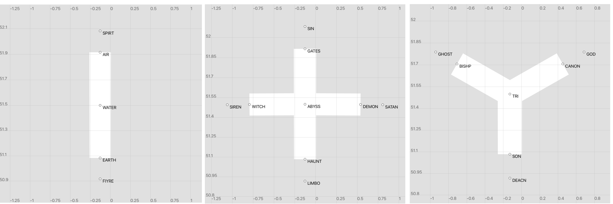

Aviary¶

Aviary is an air traffic scenario generation package developed as part of the Simurgh project. It aims to make available a large number of simple (but non-trivial) air traffic control scenarios suitable for the training of an artificial agent via reinforcement learning. The package also includes a set of evaluation metrics for measuring performance in the air traffic control challenge.
Each aviary scenario consists of two parts:
An airspace sector definition. Three elemental sector types are supported:
I sector, representing a linear airway
X sector, representing a pair of intersecting linear airways
Y sector, representing a pair of merging airways.
Each aviary scenario takes place in a sector of I, X or Y type. Later versions of aviary will support the composition of these simple elements to form more complex sectors consistent with real-world sector parts.
In addition to defining the airspace boundary, a sector includes a set of fix locations and a corresponding set of routes through the sector, where a route is defined as a sequence of fix points.
Sector definitions are serialised in GeoJSON format.
A sequence of aircraft whose routes pass through the sector. Each aircraft is defined by the following attributes:
callsign
aircraft type
initial position
arrival time relative to the scenario start time (“timedelta”)
departure airport
destination airport
current flight level
cleared flight level
requested flight level
route (sequence of fix points crossing the sector)
Aircraft definitions are serialised in JSON format.
Installation¶
Install from the repository root directory:
pip install .
Developer install:
pip install -e .
Usage¶
Aviary supports:
Generation of I, X, Y sector definitions in GeoJSON format
Generation of aircraft definitions in JSON format
Translation between aviary and BlueSky scenario formats
Sector generation¶
Run the sector_geojson.py script passing the following command line arguments:
sector_typeI, X or Ysector_nameAny stringoriginLongitude/latitude coordinates separated by a commalower_limitSector lower limit flight levelupper_limitSector upper limit flight levelfilename_prefixOutput filename prefix (optional)output_pathOutput file path (optional)
Example:
sector_geojson.py --sector_type=X --sector_name="X-sector" --origin=-0.1275,51.5 --lower_limit=140 --upper_limit=400

Scenario generation¶
To generate a simple overflier-climber scenario, run the overflier_climber.py script, passing the following command line arguments:
cruise_speedA CSV file containing aircraft cruise speed by aircraft type and flight levelcruise_speed_indexThe name of the index column in the cruise speed CSV fileclimb timeA CSV file containing cumulative aircraft climb time by aircraft type and flight levelclimb_time_indexThe name of the index column in the climb time CSV filedowntrack_distanceA CSV file containing aircraft downtrack distance by aircraft type and flight leveldowntrack_distance_indexThe name of the index column in the downtrack distance CSV filesector_typeI, X or Y (defaults to “I”)aircraft_typesA comma-separated list of aircraft types to appear in the scenarioflight_levelsA comma-separated list of flight levels to appear in the scenariothinking_timeA float, specifying the “thinking time” in seconds; this extends the scenario to make climbing ahead of the overflier a possibly optimal solutionseedA random seedfilename_prefixOutput filename prefix (optional)output_pathOutput file path (optional)
Note: to enable any user to generate overflier-climber scenarios, approximate CSV lookup tables for the aircraft cruise speed, climb time and downtrack distance are provided in the aviary/resources directory. Three aircraft types are included (A320, A343 and DH8D), each of which may be found in the BlueSky simulator’s OpenAP aircraft performance model. These tables contain simple approximations, obtained by linear (in the case of cruise speed) and cubic spline (in the case of climb time and downtrack distance) interpolation, and should not be supposed to accurately represent aircraft performance at all levels. In particular, the climb time and downtrack distance approximations for the A320 & A343 aircraft types are not accurate above FL ~300.
Example:
overflier_climber.py --cruise_speed=cruise_speed.csv --cruise_speed_index=FL --climb_time=climb_time.csv --climb_time_index=fl_bins --downtrack_distance=downtrack_distances.csv --downtrack_distance_index=fl_bins --sector_type=I --aircraft_types=DH8D,A320,A343 --flight_levels=300,360,400 --thinking_time=60 --seed=22
Scenario translation¶
BlueSky is an open source air traffic simulator. To convert an aviary scenario into the format expected by BlueSky, run the parse_scenario.py script passing the following command line arguments:
sector_geojson Full path to an aviary GeoJSON sector definition file
scenario_json Full path to an aviary JSON scenario file
output_pathOutput file path (optional)
Example:
parse-scenario.py --sector_geojson=I-sector.geojson --scenario_json=overflier-climber-22.json
Development¶
Scenario generation algorithms are implemented in aviary as strategies in the context of the ScenarioGenerator class. The workflow for adding a new algorithms is:
Create a subclass of
ScenarioAlgorithmand implement theaircraft_generatormethod. On each call, this method must yield a dictionary representing a new aircraft in the scenario, containing all of the attributes listed above.Optionally, add a python script (in the
scripts/directory) to enable scenario generation from the command line. The existing scriptoverflier_climber.pymay be used as a template. Add the name of the script to thescriptsoption insetup.py(to make it callable from the project root directory).